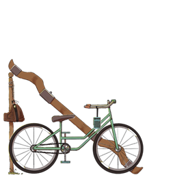
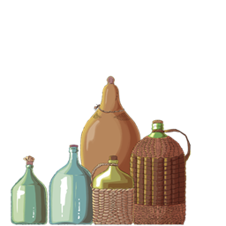
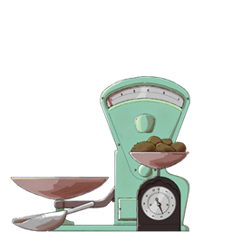
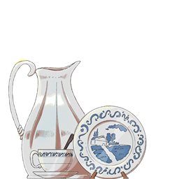
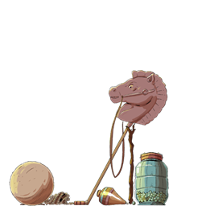
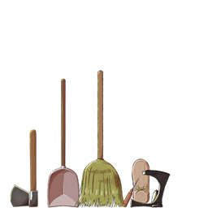

Estribo de madera huaso
Pieza de madera en forma de pantufla para apoyar el pie al montar y dar estabilidad.
Aquí podra ver una selección de 70 piezas que forman parte del recorrido en nuestro museo representativa de cada estancia de la casa y sus alrededores.
VOLVER ATRÁS
El CrucePieza de madera en forma de pantufla para apoyar el pie al montar y dar estabilidad.
Arco de madera que unía dos animales de tiro, para transportar cargas o arar la tierra.
Medio de transporte económico, usado para llevar recados y productos entre localidades.
Radio a pilas de la década del 60, pequeña y ligera para poder llevarla en movimiento.
Vehículo de madera tirado por animales, para transportar productos agrícolas.
Versión más pequeña de la carreta, para cargas menores o desplazamientos cortos.
Vehículo de mayor tamaño para trasladar personas y cargas en trayectos largos.
Para comodidad del jinete a la hora de montar. De laminado de álamo, al ser firme y ligero.
Arnés colocado en animales de tiro para distribuir el peso de la carga.
Pieza metálica fijada a las patas de los caballos para protegerlas y mejorar su rendimiento.

La bodegaTarro de hierro galvanizado para contener leche de entre 20 a 40 litros. Popularizado tras el 70, con la masificación del consumo lácteo tras el programa “Medio Litro de Leche”.
Costales de yute, elaborados en arpillera resistente y transpirable, ideales para el almacenamiento de granos y legumbres, con un almacenamiento de entre 50 a 100 kilos.
Caja de madera envuelta en tela arpillera para el traslado de productos más delicados como botellas de vidrio, conservas enlatadas o frutas.
Botella de vidrio envuelta en mimbre con mango y corcho para contener licor de 10 litros.
Latas de hojalata para la conservación de sardinas, jurel, durazno en almíbar o arvejas entre otros productos.
Botella de vidrio con corcho para contener licor de 8 litros.
Botella de vidrio envuelta en mimbre con mango y corcho para contener licor de 15 litros.
Barril más mediano para la venta directa, conservando productos como el vinagre, la chicha o otros licores.
Botella de vidrio con corcho para contener licor de 5 litros.
Barril grande para el almacenamiento y fermentación del vino. Siendo una más económica para el mercado nacional, con formatos más pequeños para la creciente exportación.

El localHerramienta de taller, usada para afilar por medio de una piedra u hoja metálica giratoria.
Usada para el pesaje de alimentos como legumbres o harina. Con un diseño en abanico, que permitía ver con claridad el peso, asegurando una venta transparente al comprador.
Un modo de surtir los alimentos como grano, legumbre o azúcar, de su contenedor de origen a los sacos de los clientes.
Instrumento doméstico para el pesaje de porciones menores, como azúcar o café. Ideal para aquellos que iban a comprar diariamente en menor cantidad para su desayuno u once.
Alcancía de barro originario de Pomaire, usado para guardar monedas. Mismas que se sacaban rompiendo el recipiente, o por debajo a través de un tapón.
Lámpara transportable que iluminaba utilizando queroseno, un líquido inflamable y económico. Usadas en la primera mitad del siglo, antes de la masificación de la electricidad.
Se usaba para redactar documentos y llevar cuentas con mayor formalidad. Funcionaba por la transferencia de tinta a través de los impactos de caracteres metálicos sobre el papel.
Reproductor de vinilos de diseño compacto. Llegando a las áreas rurales de Chile durante la segunda mitad del siglo XX.
Recipiente de vidrio donde se guardaban dulces o galletas. Era un objeto atractivo para los niños, para cuando venían a comprar después de clases o en los fines de semana.
Recipiente "hechizo" para el transporte y consumo de licor, hecho de materiales variados, en este caso de caucho reciclado de alguna rueda.

El comedorUtensilio cotidiano principalmente elaborado de cerámica, pensado para beber infusiones, presente en casi todos los hogares rurales y urbanos.
Piedras en forma de dona, que datan de la época de los “Kofkeche”, antes de los Mapuches, y se teoriza que se utilizaban para usos rituales de fertilidad agrícola.
Recipiente de cerámica usado para servir agua, jugo o vino en la mesa. Fue muy común en la primera mitad del siglo XX.
Vajilla producida en Chile desde mediados del siglo XX, resistente y accesible. Inspirada en el patrón “Willow”, de la loza inglesa con sus ilustraciones en tonos azules.
Cocina portátil que funcionaba con brasas o carbón, usada para preparar alimentos en patios o cocinas sin electricidad. O para calentar espacios por las brasas.
Símbolo de distinción en las mesas familiares, usados en ocasiones especiales.
Prenda usada tanto en faenas agrícolas como en la vida cotidiana, pensado para proteger del sol, más en la faena agrícola en fundos.
Recipiente metálico para el almacenamiento, conservación y poder servir aceite. Presente en la mesa y la cocina.
Utensilio pesado y duradero, usado para freír y cocinar sobre fuego directo.
Pequeño utensilio manual elaborado en madera, para moler condimentos y servirlos directamente sobre los alimentos.

La canchaSombrero de paja típico del campo chileno, usado en faenas como celebraciones, principalmente para bailar cueca.
Juguete de madera que consistía en encajar una pieza en un palo amarrado de cada extremo, utilizando una sola mano.
Juguete sencillo y popular entre niños, usado para juegos colectivos y competencias en la cancha.
Juguete tradicional chileno hecho de papel liviano, cañas delgadas y una cola de hilo que le da estabilidad en el aire.
Bolita de vidrio de tonalidad verdosa con un diseño interno de una hoja de colores que le da su nombre, usado para juegos de puntería y altamente coleccionable.
Pelota de caucho o trapos hechiza, para jugar a la pelota.
Nombre proveniente del quechua “china”, significa: “sirvienta”. Término común para nombrar a la mujer campesina, quedando como tradición como vestimenta de la cueca.
Pieza circular con pinchos metálicos, usada para tantear el costado del caballo al cabalgar e indicarle a dónde ir. Usada a su vez en la cueca como un elemento del vestuario.
Juguete infantil que imitaba la montura, conformado por un palo y una cabeza de caballo de madera o de plástico en la segunda mitad de siglo.
Tradicional juguete de madera que se hacía girar con una cuerda enrollada, buscando que dure el mayor tiempo posible en pie.

Patio y corredores
Herramienta agrícola tradicional, tirada por animales, usada para preparar la tierra de cultivo. Al separar el suelo por medio de una hoja curva, para la plantación de semillas.
Utilizada para remover tierra, cargar compost o limpiar corrales. Teniendo una presencia constante en las zonas agrícolas, especialmente por la primera mitad del siglo XX.
Recipiente grande para lavar ropa a mano, presente en patios y lavaderos. Usado a la intemperie cerca del tendedero para secar la ropa al sol.
Fabricada con fibras naturales y económicas, servía para barrer y mantener la limpieza del polvo en interiores, como corredores y patio.
Recipiente de cerámica o metálico utilizado por barberos para lavar y preparar el afeitado.
Pieza de hierro forjado también conocida como bigornia o pie de zapatero, se utilizaba para sostener los zapatos durante su reparación o fabricación.
Aparato compacto de recepción de ondas de radio, que reproducía noticias o música por medio del uso de transistores, pequeños receptores de radio.
Recipiente metálico o de madera usado para extraer agua del pozo. Fue vital en la vida rural durante gran parte del siglo XX, antes de la llegada del agua corriente a los hogares.
Herramienta formada por una hoja metálica y un mango de madera, usada para cortar troncos y ramas. Siendo la fuente principal de energía en hogares sin electricidad ni gas.
Silla liviana y flexible, con un movimiento oscilante al tener una base en forma de arco, que presentaba un meneo ligero y suave que ayudaba al reposo.
Mueble de madera utilizado en colegios, que disponía de un apartado para guardar los cuadernos. Impulsando su fabricación tras la reforma educacional de 1965.
Recipiente metálico con brasas que se colocaba para templar el lecho en noches frías. Su uso fue habitual hasta mediados del siglo XX, antes de la llegada de la electricidad.
Botella de goma que se llenaba de agua caliente para dar calor. Fabricadas también de manera hechiza, con una botella plástica,piedras o ladrillos calientes.
Aparato fijo de comunicación doméstica de mediados del siglo XX, con un disco giratorio para marcar los números telefónicos, girando cada número de forma secuencial para llamar.
Conjunto de jarra y palangana de cerámica o latón, usado para el aseo personal antes de la llegada del agua corriente.
Aparato de visualización mediante el choque de haces de luz sobre una pantalla de fósforo que reflejaba la imagen. Llegando a los hogares en los años 60.
Utensilio metálico donde se colocaban brasas para alisar la ropa. Se usó ampliamente en la primera mitad del siglo XX, antes de la llegada de las planchas eléctricas.
Mueble adaptado para la higiene infantil, usado en hogares hasta fines del siglo XX.
Recipiente portátil para necesidades fisiológicas, usado dentro de la habitación, sobre todo durante la noche. También viendo modelos desechables de cartón.
Aparato moderno de calefacción, introducido en la segunda mitad del siglo XX.